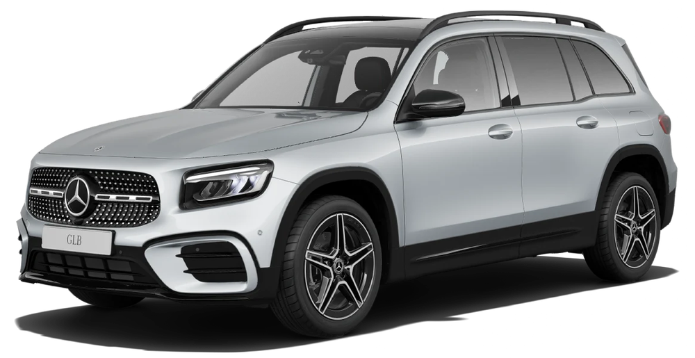
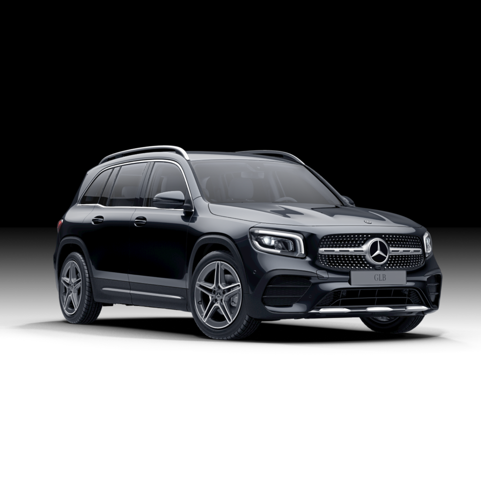

MERCEDES-BENZ
Mercedes-Benz GLB
جميع نسخ مرسيدس GLB مع المواصفات الرسمية مرتبة في صفحة واحدة، لتسهيل المقارنة بين جميع الإصدارات.
جميع نسخ مرسيدس GLB مع المواصفات الرسمية مرتبة في صفحة واحدة، لتسهيل المقارنة بين جميع الإصدارات.

| المحرك | 1.3 لتر تيربو |
| عدد الأسطوانات | 4 |
| القوة | 136 حصان |
| عزم الدوران | 230 نيوتن متر |
| ناقل الحركة | 7G-DCT |
| نظام الدفع | دفع أمامي |
| التسارع (0-100) | 9.4 ثانية |
| السرعة القصوى | 200 كم/س |
| عدد المقاعد | 5 أو 7 |
| نوع الوقود | بنزين |

| المحرك | 1.3 لتر تيربو + نظام هجين خفيف |
| عدد الأسطوانات | 4 |
| القوة | 163 حصان |
| عزم الدوران | 270 نيوتن متر |
| ناقل الحركة | 7G-DCT |
| نظام الدفع | دفع أمامي |
| التسارع (0-100) | 8.8 ثانية |
| السرعة القصوى | 207 كم/س |
| عدد المقاعد | 5 أو 7 |
| نوع الوقود | بنزين |

| المحرك | 2.0 لتر تيربو ديزل |
| عدد الأسطوانات | 4 |
| القوة | 190 حصان |
| عزم الدوران | 400 نيوتن متر |
| ناقل الحركة | 8G-DCT |
| نظام الدفع | 4MATIC |
| التسارع (0-100) | 7.6 ثانية |
| السرعة القصوى | 218 كم/س |
| عدد المقاعد | 5 أو 7 |
| نوع الوقود | ديزل |

| المحرك | 2.0 لتر تيربو |
| عدد الأسطوانات | 4 |
| القوة | 224 حصان |
| عزم الدوران | 350 نيوتن متر |
| ناقل الحركة | 8G-DCT |
| نظام الدفع | 4MATIC |
| التسارع (0-100) | 6.9 ثانية |
| السرعة القصوى | 236 كم/س |
| عدد المقاعد | 5 أو 7 |
| نوع الوقود | بنزين |

| المحرك | 2.0 لتر تيربو |
| عدد الأسطوانات | 4 |
| القوة | 306 حصان |
| عزم الدوران | 400 نيوتن متر |
| ناقل الحركة | AMG SPEEDSHIFT DCT 8G |
| نظام الدفع | AMG Performance 4MATIC |
| التسارع (0-100) | 5.2 ثانية |
| السرعة القصوى | 250 كم/س |
| عدد المقاعد | 5 أو 7 |
| نوع الوقود | بنزين |